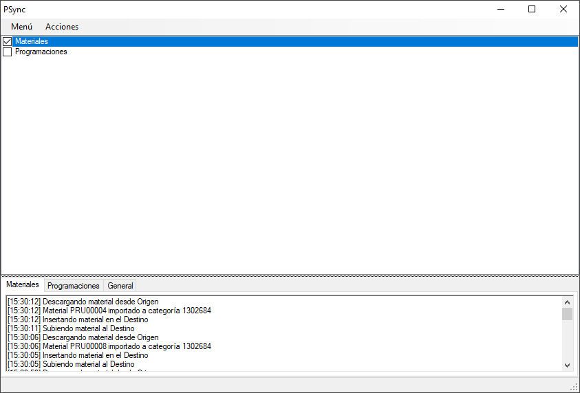

PSync - Sincronización de servidores
PSync es una herramienta diseñada para sincronizar 2 servidores de Dinesat con el fin de, poder contar con un segundo equipo listo para su uso en una contingencia o para compartir materiales y programaciones entre varias emisoras.
Elementos sincronizados
- Categorías en su orden correspondiente
- Materiales con su metadata
- Programaciones
No sincroniza
- MATERIALID de los materiales
- Páginas del Asistente en vivo(iPlay/Botonera)
- Formatos aleatorios
- Usuarios
- Registros de emisión
Intefaz del programa
Una interfaz simple que permite seleccionar que se quiere sincronizar.

PSync - Pantalla principal del sistema